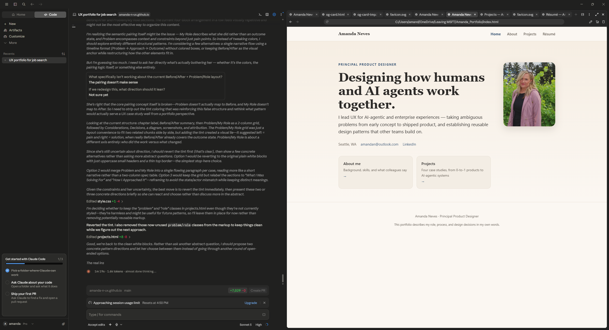
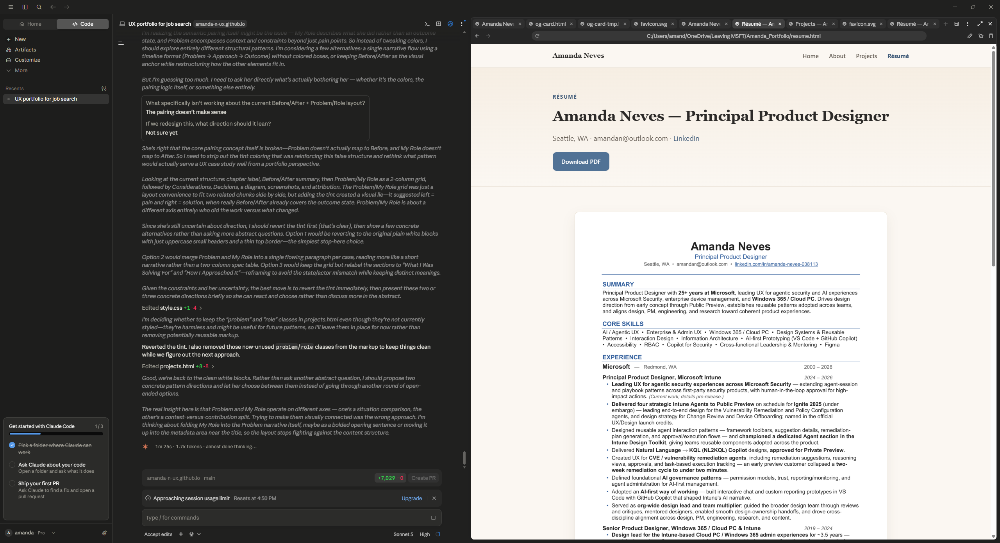
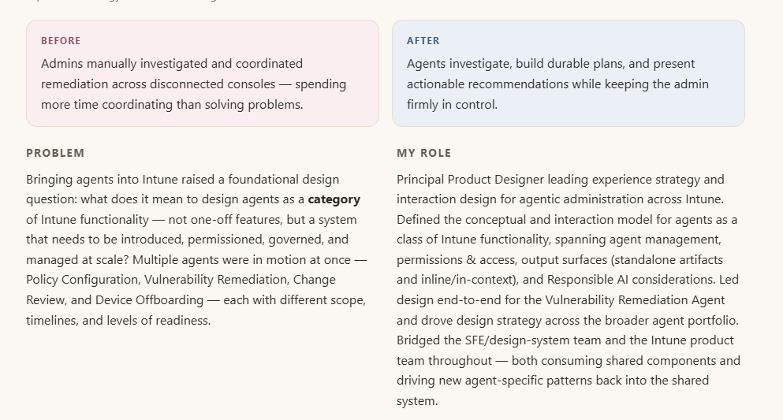
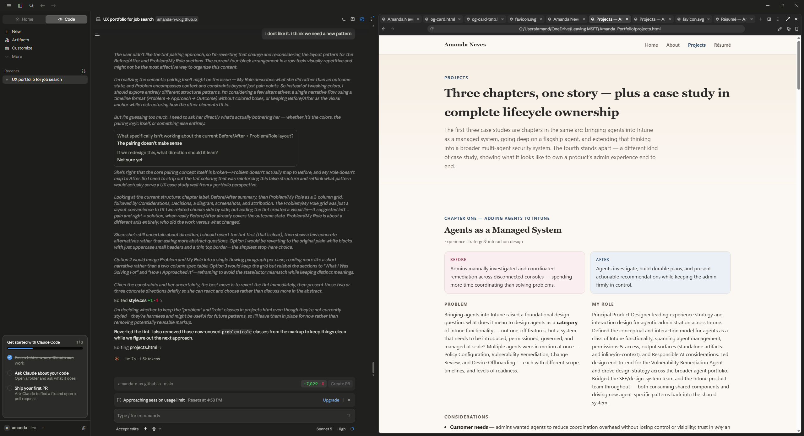

What I bring to a team
AI & Agentic UX
Interaction models for investigation, planning, approval, and execution — keeping humans in control.
Enterprise & Admin UX
Device management, RBAC, compliance, and security workflows for IT and SecOps audiences.
Design Systems & Patterns
Reusable, platform-level patterns adopted across multiple product teams.
AI-first Prototyping
Interactive chat & custom reporting prototypes built in VS Code with GitHub Copilot to shape product direction.
Design Strategy
Jobs-to-be-done framing, North Star visioning, and MVP tradeoffs grounded in constraints.
Cross-functional Leadership
Aligning design, PM, engineering, research, and content; mentoring across the org.
New-Product Admin UX
Owning admin UX for a brand-new product category from pre-launch onward — provisioning, health monitoring, and shared-use models.
Accessibility
Inclusive, accessible experiences as a first-class design requirement.
 What colleagues say
What colleagues sayVerbatim excerpts from written peer feedback. Sources available upon request.
“Anyone would be lucky to have Amanda on their team. She’s the rare leader who elevates the work and the people at the same time.”
“Your leadership in laying the foundational design for IRG was nothing short of masterful… I’ve learned so much from watching how you navigate ambiguity with grace and how you advocate for both users and design integrity without ever losing momentum.”
“You deserve a medal for the gauntlet you ran on this agent sprint… you had the most challenging set of conditions to address… your tenacity and commitment were the only reason that work was delivered at all.”
“You do a great job taking sometimes nebulous requirements from a variety of sources and turning them into amazing designs! I’m always impressed about how you handle it and deliver results.”
“You have the amazing ability to think across both UX and business goals… Your persistence and progress in driving the Cloud PC integration strategy, helping build consensus and creating clarity on the path forward has been impressive.”
“Amanda keeps amazing me with the amount of experience, matureness, and eagerness shaping the future of our Windows 365 product… she returns phenomenal designs afterward that do not need that many edits! A great partner.”
“I can give you a tricky set of requirements (often driven by exec, which can be particularly tricky) and have confidence the right design will be built… which takes a load of pressure off me.”
Built with AI, directed by me
I used Claude, an AI coding assistant, to build this site — I'm a designer, not a developer, and it let me move fast. But “used AI” undersells what actually happened: nothing here shipped because AI suggested it. A few examples of what “directed” meant in practice:



